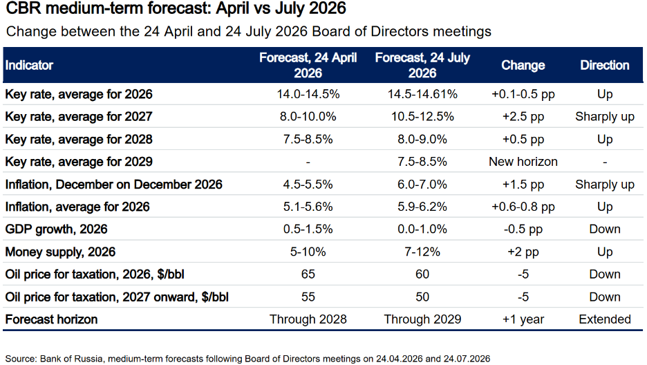

|
 |
|||
|
|||||||
What happened:The Central Bank of Russia (CBR) cut its key rate for the tenth consecutive time, by 25 basis points to 14%. The decision went against expectations of a rate hold at 14.25%. Even more surprisingly, it paired the decision with a dovish signal, but warned of a tightening if the fiscal situation deteriorates. Our take:The move raises questions about the CBR's independence. Until now, the CBR has enjoyed full autonomy from the government and remained largely insulated from political pressure. That independence has helped it stabilize the Russian economy during the war. Today's decision suggests the CBR has yielded to President Vladimir Putin's recent suggestion that, “based on macroeconomic indicators,” the key rate should come down. The Kremlin, increasingly worried about weak growth, has effectively overridden the CBR's mandate to keep inflation in check. The cut also runs against the CBR's commitment to uphold its inflation target independently. It comes in the middle of a fuel crisis, with gasoline and diesel prices rising sharply. Alongside the cut, the CBR sharply raised its 2026 inflation forecast from 4.5%-5.5% to 6%-7% and lowered its 2026 GDP growth forecast from 0.5%-1.5% to 0%-1%. The decision suggests that inflation will become a more important source of war financing. Russia is sliding deeper into stagflation. Yet in the near term, the move helps the government narrow the fiscal deficit: higher inflation means more nominal rubles in tax revenue and possibly lower borrowing costs. But that benefit will not last. The government will have to adjust next year's spending upward to account for inflation. Tellingly, the CBR has acknowledged that it lacks clarity on next year's budget, and the government also appears unable to provide firm figures amid the war. The long-run cost is likely to exceed the near-term relief. In Russia's system, the CBR's independence was one of the few meaningful checks on the Kremlin's spending impulses. Without that counterweight, and with war financing taking priority, the risks for next year are rising. Higher inflation will erode real incomes, weaken household purchasing power, and further unanchored inflation expectations. Those pressures could prove much harder to contain once the delayed effects begin to hit. The Kremlin may gain short-term fiscal room, but that will come at the expense of one of the few institutions that has helped preserve macroeconomic stability.  |
||